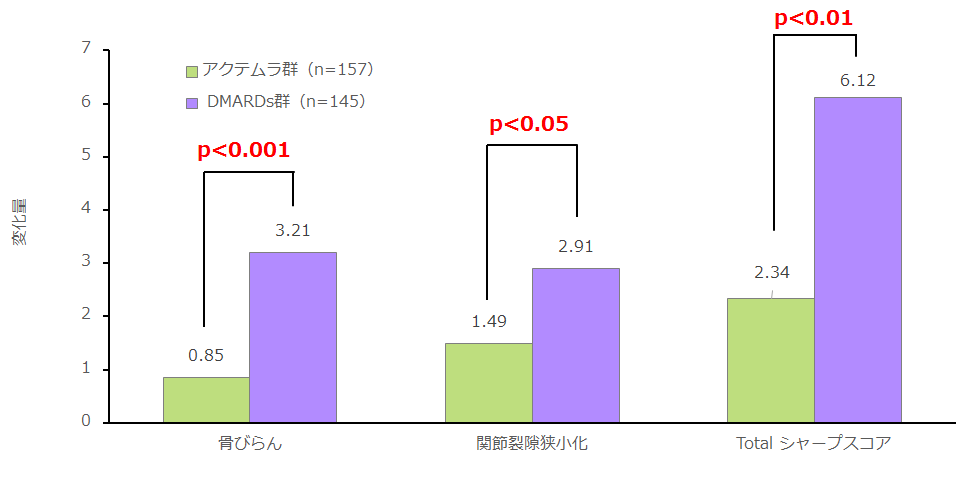

アクテムラは骨破壊の指標とされる「骨びらん」、軟骨破壊の指標とされる「関節裂隙狭小化」が有意に改善している
- ●対象：少なくとも1剤以上の抗リウマチ薬（DMARDs）あるいは免疫抑制剤の投与をしても活動性を有する関節リウマチ（RA）患者302例（アクテムラ群：157例、DMARDs 群：145例）、平均罹病期間2.2年という急激に関節破壊が進行する患者を対象にしている
- ●結果：投与52週後の骨びらん、関節裂隙狭小化、Totalシャープスコアの変化量は、いずれもアクテムラ群がDMARDs 群に比べ有意に抑制

Nishimoto N. et al. Ann Rheum Dis(2007) 66:1162-1167を参考に作成
利益相反：本研究は中外製薬の援助により実施しています
アクテムラはMonotherapyでも
高い関節破壊抑制効果が期待できる